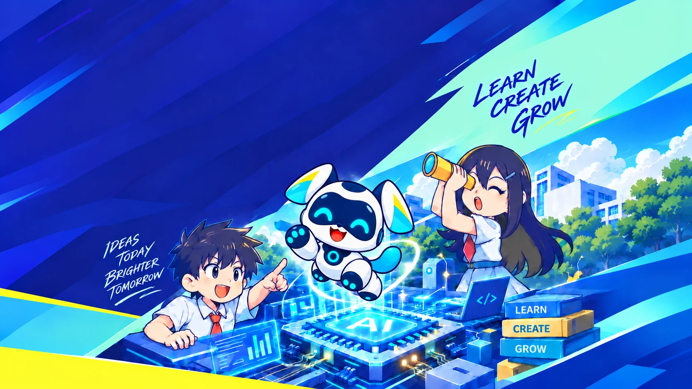

Learn
Understand how AI sees, speaks and decides, through hands-on workshops that make big ideas feel approachable.

CraftAI is part of CityUHK's Bright Future initiative. Students go beyond using AI tools. They explore the ideas behind them and build projects of their own, guided by the university community.
Understand how AI sees, speaks and decides, through hands-on workshops that make big ideas feel approachable.
Design, prototype and code AI-powered projects that solve problems you care about, at school, at home, in the city.
Build confidence, teamwork and a responsible mindset for using AI. These skills carry into whatever comes next.
Register for the Inauguration Ceremony and be the first to hear when programme applications open. Seats are limited.
BFAI 面向中一至中六學生，按不同學習階段設有相應程度及學習目標，涵蓋入門探索至進階挑戰。學生可按個人興趣、基礎及學習進度參與合適的課程。
BFAI 不僅提供人工智能（AI）課程，更希望為學生帶來大學先修體驗（pre-university experience），讓他們提早接觸大學 STEM 相關學科的學習及研究方式，探索個人興趣與未來升學方向。
學生將從輕鬆有趣的 AI 體驗活動開始，逐步學習相關知識、動手創作，並進一步挑戰大學層面的 AI 理論。
在高階學習階段，課程亦會為高年級、學有餘力且對 AI 充滿熱誠的學生提供小班進階學習機會，讓他們走進研究室，參與前沿實驗。
九個短期課程將於 2027 至 2028 年分階段陸續推出，於星期六上午上課。
首個課程將於 2027 年 1 月開始，其餘課程將陸續開辦。
所有課程費用全免。
我們衷心感謝鵬程慈善基金的贊助，讓學生有機會免費參與課程。
學生可經中學推薦，亦可自行報名。課程計劃優先考慮獲學校推薦的申請。
學校推薦須由 STEM 統籌老師或學校指定的負責老師統一提交。有興趣的學生可先向相關老師查詢，並與家長一同出席啟動典禮，了解課程及申請詳情。
啟動典禮將介紹完整學習路徑、各階段的適合對象，以及課程報名和收生安排。參加者亦可直接與課程團隊交流，並透過約兩小時的活動體驗，進一步了解 BFAI。
首個課程將於啟動典禮上開放即場報名。參加者可先了解課程，再提交申請，為 2027 年 1 月開課做好準備。
歡迎中學校長、STEM 統籌老師及相關負責老師出席啟動典禮，或直接聯絡課程團隊，了解課程內容及推薦安排。
為方便聯絡及統籌，我們希望每間學校指定一位老師擔任聯絡人，並統一提交學生推薦。
會。Prof. Clint HO 將以義務形式參與課程支援及教學工作。
課程將由團隊共同授課，Prof. Clint HO 亦會盡量親自參與教學，與學生分享知識及經驗，並提供具挑戰性的學習內容。
啟動典禮將於 2026 年 11 月 21 日舉行，歡迎學生、老師、家長及學校代表參加。
請掃描海報上的 QR code，或透過以下網頁報名：
填表前，請仔細閱讀報名說明：
首個課程將於 2027 年 1 月開始，並於 2026 年 11 月的啟動典禮上開放即場提前報名。參加者可先了解課程內容，再提交申請。
啟動典禮與課程須分開報名；報名參加典禮並不等同已提交課程申請。